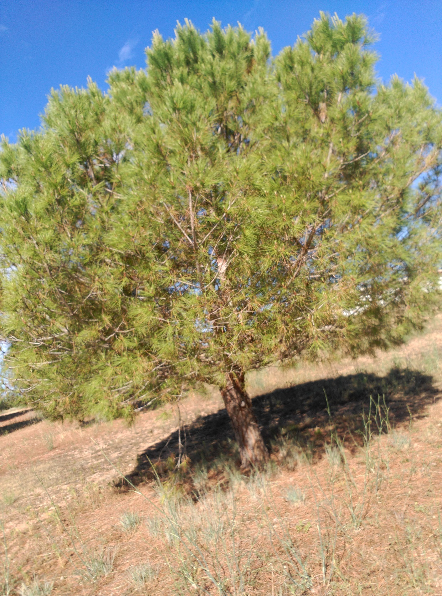
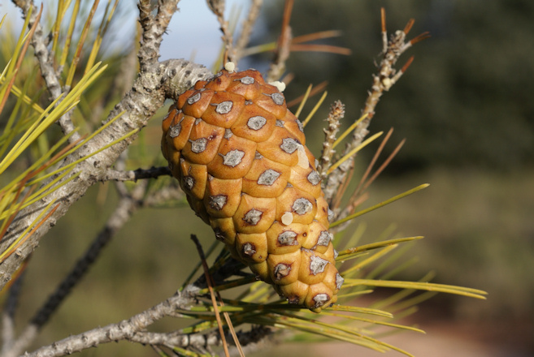

Pi blanc
Descripció
El pi blanc, pi garriguenc o pina (Pinus halepensis), anomenat pi bord a Eivissa i Formentera, i sovint pi carrasco al País Valencià és un arbre del gènere Pinus originari de la regió mediterrània, tant del nord com del sud. El nom científic de l'espècie prové del nom la ciutat siriana d'Alep.
Morfologia
És un arbre de fins a 20 metres d'alçada, amb les branques i l'escorça grisenques, d'aquí li ve el nom de "pi blanc", per oposició al pi pinyer i el pinastre amb els que comparteix àrea de distribució i que tenen una escorça de tonalitat més vermellosa. Les fulles, dites acícules, amiden de 0,7 a 1 mm d'amplada i de 3,5 a 7 cm de longitud, són d'un verd groguenc i apareixen de 2 en 2. Floreix a l'abril o al maig i fa moltes pinyes, de 5 a 12 cm de longitud, amb un clar peduncle i amb esquames amb escudets poc prominents. És un arbre bastant xeròfil i heliòfil.
Als Països Catalans es troba des del nivell del mar fins a un màxim de 1.200 metres d'altitud, al País Valencià, 1.100, a les Balears, i 1.000 a Catalunya.[4] És l'arbre dominant en grans extensions del país de l'alzinar, on s'ha estès colonitzant els conreus abandonats, ja que es tracta d'una espècie oportunista. També els incendis n'afavoreixen la propagació, ja que d'una banda el foc fa esclatar les pinyes i n'escampa les llavors i d'una altra les altes temperatures afavoreixen l'obertura de les pinyes: és una espècie piròfita.


Torna